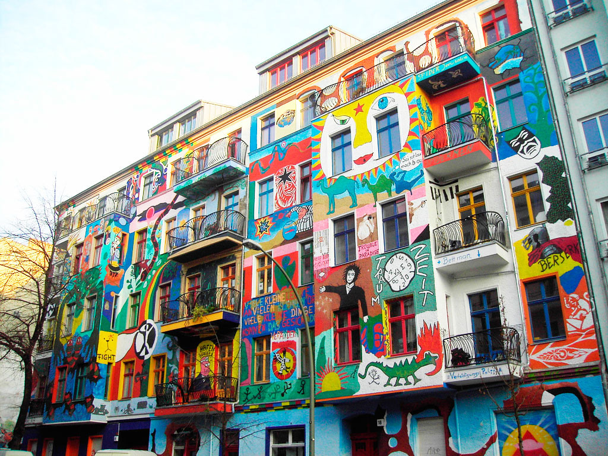
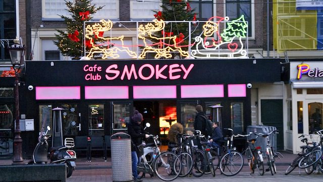
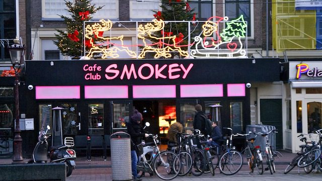
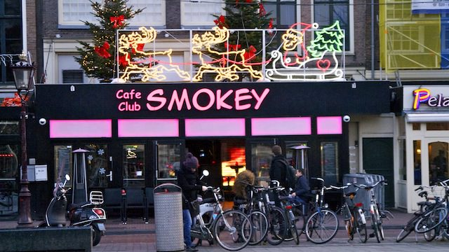
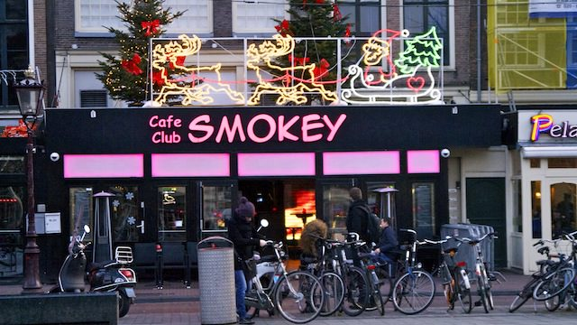

Путешествие, наполненное незабываемыми впечатлениями

 

Red lights
time to ...

 

time to ...
Входит в стоимость
Дополнительно
1 день
Прилет в в Нидерланды (Амстердам)
Музей Рейксмузеум
Мы предлагаем вам сравнить исскуство в этом городе. Первый день посвятим Государственному музею,который сочетает черты готического стиля и Возрождения. Основную ценность музея составляет коллекция картин художников с мировой известностью.(Здесь можно увидеть работы Рембрандта, Ван Гога, Вермеера, Халса, Рейсдала, де Хоха, Стена, ван Скорела, ван дер Гельста, Рубенса, Эль Греко.)
Парк Вондела
Vondelpark - расположен в 10 минутах езды на велосипеде от государственного музея Rijksmuseum. Это самый большой парк в городе.
Манкид
После такого насыщенного дня будет очень уместно расслабиться в одном из местных баров.

2 день
Королевский дворец
Поможет погрузиться в атмосферу дворцового шика и роскоши.
Национальный монумент
Сегодня этот памятник считается святыней для голландского народа. Являясь центовым местом стела также служит местом встречи горожан
Бегинаж
Один из старейших закрытых дворов Амстердама. В настоящее время здесь также находится англиканская церковь.
The Happy Pig Pancake Shop Amsterdam
Идеальное место для пополнения энергии. ( тут можно выпить вкусный кофе, а такжке плотно поужинать).

3-4 день
Самое время увидеть Амстердам с другой стороны
Stedelij
Идеалньно место для любителей чего-то нового и необычного!
De Dampking
Очень популярный кофешоп в Амстердаме.
Квартал Красных Фонарей.
Вы увидите визитную карточку этого места — знаменитые «живые» витрины. Узнаете, сколько зарабатывают жрицы любви, и по каким правилам работают. Мы пройдем мимо театра «Casa Rosso», в котором проходят шокирующие порно-шоу.

5 день
Свободный день
Мы рекумендуем вам прокатиться на кораблике по каналам.
Hortus Botanicus
Посетить красивый сад.
Тюльпанов поля
Больше всего полей находится между Харлемом и Лейденом. Вы можете отправиться гулять по полям как на велосипеде, который можете взять в аренду, так и пройтись пешком.
Cannabis College
Он занимается просветительской деятельностью, распространяет знания о конопле.